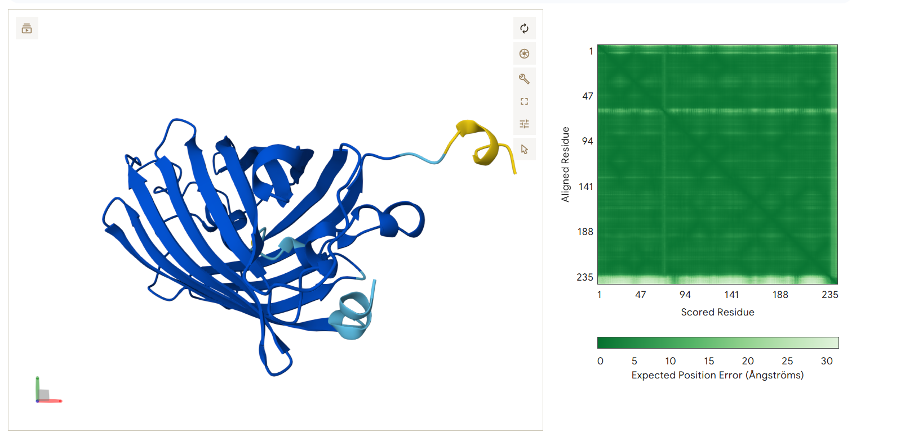

CMU 11781 / 02741, Generative AI for Biomedicine · Jonah Zembower · September 30, 2026
1. Summary
ProGen2-small (151M parameters) was finetuned on 47,854 green fluorescent protein (GFP)
variants for the full 10 epochs at the provided batch size of 32, and used to generate 92
candidate sequences, each conditioned on a 64-residue prompt. Candidates were folded with
AlphaFold 3 and ranked by mean pLDDT subject to pTM > 0.8.
Every folded candidate passed the pTM > 0.8 criterion (pTM
0.90–0.92, mean pLDDT 90.70–92.30), indicating that finetuning succeeded: the model
produces sequences that AlphaFold 3 confidently folds into the GFP β-barrel, at the
correct length of 237 residues, with the chromophore-forming triad intact.
The divergence analysis, however, shows that the finetuned model contributes
almost no novel sequence variation. Under greedy decoding it reproduced the training
consensus exactly at every generated position across all 92 designs. Under nucleus
(top-p) sampling it introduced 5 substitutions across 92 designs, and
none of them appears in any of the top-5 candidates: all 9 substitutions in
the reported designs were inherited from their prompts. Section 6 argues this follows
directly from the structure of the training data.
2. Method
2.1 Data
The training set is 47,854 sequences, each exactly 237 residues. The consensus sequence
(most frequent residue per position) corresponds to avGFP with the initial methionine
removed, so consensus position i equals avGFP position i+1. The
chromophore-forming triad Ser–Tyr–Gly sits at
positions 64–66.
This is a point-mutation scan of a single protein rather than a diverse homolog family:
mean per-position conservation is 0.984, and no position varies by
more than ~4% (minimum conservation 0.959). Six positions (1, 87, 93, 118, 119, 237)
never vary at all.
2.2 Finetuning
Base model
ProGen2-small, 151M parameters
Objective
Next-token prediction over amino acids; loss −log P(next residue), masked at padding
Epoch 7, validation loss 0.08718 — the best-validation checkpoint, not the final one
Seed
0 (unchanged)
Hardware
PSC Bridges-2, NVIDIA L40S-48 (1 h 41 m wall clock)
Validation loss by epoch:
Epoch
1
2
3
4
5
6
7
8
9
10
Validation loss
0.0917
0.0995
0.0880
0.0903
0.2118
0.0908
0.0872
0.0902
0.0970
0.0938
The model converges within one epoch, and the remaining nine are noise.
Validation loss reaches 0.0880 by epoch 3 and improves by only 0.0008 over the following
seven epochs. To test whether the epoch-to-epoch movement carries any signal, the identical
configuration — same seed, same batch size, same code — was run a second time on a
different GPU (NVIDIA H100-80). That replicate's best validation loss was
0.08933, reached at epoch 1, with all nine subsequent epochs worse.
The two runs' best losses differ by 0.00215. The replicate's own
epoch-to-epoch range was 0.0339 — roughly 16× larger
than the gap between runs. Differences of this size are therefore not evidence that one run
learned more than the other; they reflect floating-point non-determinism between GPU
architectures. The epoch-7 checkpoint was selected because it had the lowest validation loss
of any checkpoint produced, which is an objective rule, not a claim that it is a better model.
The epoch-5 excursion to 0.2118 — roughly 2.3× its neighbours, fully recovered by
epoch 6 — is a transient optimisation instability at a learning rate of about
7.3×10−4.
2.3 Generation
Each of the 92 held-out test sequences supplied its first 64 residues as a
prompt; the model then generated autoregressively to an EOS token or 512 tokens. Because the
prompt ends at position 64, the model itself generates the chromophore tyrosine at
position 65. All 92 outputs terminated at exactly 237 residues, confirming the model
learned the family's length.
Both decoding strategies were run for comparison (Section 5.4). The reported candidates use
nucleus (top-p) sampling, p = 0.8, MAX_SEQ_LENGTH = 512,
batch size 1, seed 0.
2.4 Structure evaluation
Twenty candidates were submitted to the AlphaFold 3 web server (alphafoldserver.com) as
single protein chains, one copy each, with server-generated MSAs. Ranking used mean pLDDT
over all atoms, filtered to pTM > 0.8.
Ranking is over 18 of the 20 folded designs. Why, and what it does not affect.
The 20 structures were folded from an earlier, shorter finetuning run. Comparing that run's
92 top-p designs against this one's, 84 of 92 sequences are byte-identical;
8 differ (designs 6, 11, 28, 45, 48, 65, 73, 83). Two of those 8 — design_006 and
design_011 — were among the 20 folded, so their structures no longer correspond to the
sequences this model produces. They are excluded. The remaining 18 folded designs are
the exact sequences generated by the epoch-7 checkpoint reported here, and all 18
pass pTM > 0.8.
This affects only the fifth-ranked slot. Ranks 1–4 are unchanged, and design_001
(pLDDT 91.57) moves up from sixth to fifth. The excluded design_006 previously ranked fifth
at pLDDT 91.81, so the exclusion changes the reported top-5 by 0.24 pLDDT points — well
inside the noise floor discussed in Section 6. The unfolded variants of designs 6 and 11
could have ranked anywhere; that is a genuine limitation, recorded in Section 7.
3. What pLDDT and pTM measure
pLDDT (predicted Local Distance Difference Test) is a per-atom confidence
estimate on a 0–100 scale. It predicts how well the local environment of each atom would
match an experimental structure, so it is fundamentally a local measure: high pLDDT
means individual secondary-structure elements and side-chain placements are trustworthy.
Above 90 is "very high"; 70–90 is confident; below 50 usually indicates disorder. All
candidates here exceed 90 on average, which is why the rendered structures are almost
uniformly dark blue.
pTM (predicted Template Modeling score) estimates the TM-score between the
prediction and the true structure, on a 0–1 scale. Unlike pLDDT it is global: it
asks whether the overall fold and the relative arrangement of distant parts of the chain are
correct. A pTM above 0.5 implies the general fold is likely right; above 0.8 indicates high
confidence in the complete topology. The assignment's pTM > 0.8 threshold therefore
tests that the whole β-barrel is coherent, not merely that local geometry looks tidy.
The accompanying PAE (Predicted Aligned Error) plots show expected positional
error in ångströms for every residue pair. Uniformly low (green) PAE, as seen here,
means the model is confident about how the entire chain packs together, not just locally.
Important limitation. Both metrics measure predicted structural
confidence, not biological function. A GFP variant can fold into a perfect β-barrel
and still be non-fluorescent if the chromophore environment is disturbed, since chromophore
maturation depends on precise side-chain chemistry that AlphaFold does not model. These
scores should be read as a filter that removes sequences which clearly fail to fold, not as
evidence of fluorescence.
4. Top-5 candidates
All 18 eligible folded candidates passed pTM > 0.8. The five below rank highest by
mean pLDDT. Substitutions are given relative to the training consensus in
<consensus><position><design> form. Every substitution in all
five candidates falls at or below position 64, meaning it was inherited from the prompt;
none of the top-5 contains a single model-generated substitution.
#1 — design_018
mean pLDDT 92.30
pTM 0.92
ranking score 0.93
substitutions 2
A36V, Y38H — both within the prompt region; no model-generated substitutions.

AlphaFold 3 prediction, coloured by pLDDT, with PAE plot.
Every position at which a top-5 candidate differs from the consensus. "Conservation" is the
frequency of the consensus residue at that position in the training set. "Source" states
whether the substitution came from the 64-residue prompt or was generated by the model.
Rank
Design
Substitution
Position
Conservation
Source
1
design_018
A36V
36
0.999
prompt
1
design_018
Y38H
38
0.980
prompt
2
design_007
A36D
36
0.999
prompt
3
design_008
A36T
36
0.999
prompt
3
design_008
V54A
54
0.987
prompt
4
design_010
C47Y
47
0.992
prompt
4
design_010
T61A
61
0.977
prompt
5
design_001
C47S
47
0.992
prompt
5
design_001
K51R
51
0.972
prompt
All 9 substitutions are prompt-inherited. The model authored none of them.
For completeness, the 5 substitutions the model did author across the full 92-design
top-p set — none of which occurs in a folded candidate:
Design
Substitution
Position
Conservation
design_048
H80P
80
0.983
design_045
P88E
88
0.995
design_073
E110K
110
0.986
design_083
E114V
114
0.986
design_011
M232V
232
0.966
5.3 Positional distribution
Substitutions across the 237 residues, binned into six windows. The prompt covers positions
1–64; everything from 65 onward is model output.
Design
1–39
40–79
80–118
119–158
159–197
198–237
design_018
2
0
0
0
0
0
design_007
1
0
0
0
0
0
design_008
1
1
0
0
0
0
design_010
0
2
0
0
0
0
design_001
0
2
0
0
0
0
Total
4
5
0
0
0
0
The distribution is not merely skewed but entirely confined to the prompt:
all 9 substitutions fall in positions 1–61, and the three bins covering positions
80–237 are empty. Position 36 alone accounts for three of the nine, appearing in
design_018, design_007 and design_008 — it is a mutational hotspot in the held-out test
prompts, not a model choice. Position 47 accounts for two more. Across the whole 92-design
set the picture is the same: 188 prompt-region substitutions against 5 from the model, a
ratio of roughly 38:1.
5.4 Decoding strategy
Strategy
Nucleus (top-p) sampling
p
0.8 — sample from the smallest set of residues whose probabilities sum to 0.8, renormalised
Prompt length
64 residues
Max length
512 tokens (all generations terminated at 237)
Batch size
1
Seed
0
Both strategies were run over the full 92-design test set to isolate the decoder's contribution:
Decoding
Substitutions in prompt region (1–64)
Substitutions in generated region (65–237)
Designs with ≥1 generated substitution
Greedy (argmax)
188
0
0 / 92
Top-p, p = 0.8
188
5
5 / 92
Greedy decoding reproduced the consensus exactly at every generated position in all
92 designs; the sequences appear diverse only because their prompts differ. Nucleus sampling
introduced 5 substitutions in total — 2.6% of the 193 differences observed. Top-p
was chosen for the submitted candidates because it is the only configuration in which the
model contributes anything of its own.
Greedy output is invariant to training length. The greedy design set produced
by this 10-epoch checkpoint is byte-identical to the one produced by a 5-epoch
checkpoint trained at batch size 8 — all 92 sequences, character for character. Five
additional epochs and a fourfold change in batch size altered the argmax at not one of the
92 × 173 = 15,916 generated positions. Under top-p, the same comparison
changes only 8 of 92 designs. Whatever the model learns about this family, it has learned it
well before epoch 5.
6. Interpretation
Finetuning unambiguously succeeded at the task it was given: every candidate folds into a
confident GFP β-barrel (pTM 0.90–0.92, mean pLDDT > 90), terminates at exactly 237
residues, and preserves the SYG chromophore triad at 64–66 —
including the tyrosine at position 65, which the model generates itself since the prompt ends
at 64. What the model contributed to each design, however, is essentially the consensus
sequence. All nine substitutions in the top-5 candidates were inherited verbatim from
their 64-residue prompts, not one was authored by the model, and across the whole 92-design
set only 5 of 193 substitutions came from the decoder. This follows directly from the training
data: a point-mutation scan of a single protein at 98.4% mean conservation leaves almost no
entropy for a converged autoregressive model to sample. The convergence is extreme —
validation loss bottoms out by epoch 3, a replicate run on different hardware bottomed out at
epoch 1, and the greedy design set is byte-identical to one generated by a checkpoint trained
for half as long at a quarter the batch size. The next-residue distribution is so sharp that
even nucleus sampling at p = 0.8 usually finds a single residue occupying the entire
80% probability mass, and greedy decoding is fully deterministic. The pLDDT ranking, in turn,
distinguishes almost nothing: the top five span just 0.73 pLDDT points (92.30 to 91.57) and
all eighteen span 1.60, while the candidates differ from one another by only one to two
residues out of 237. Differences that small are comparable to AlphaFold's own run-to-run
variation — the same order as the 0.00215 validation-loss gap between two identically
configured training runs — so the ordering should be read as noise rather than as a
meaningful quality gradient. The honest conclusion is that this pipeline reliably
reproduces GFP rather than diversifying it, and that pLDDT is useful here as a
pass/fail filter — confirming the sequences are foldable — not as a ranking signal.
7. Limitations and possible extensions
Confidence is not function. pLDDT and pTM assess predicted structure. None of these candidates has been tested for fluorescence, which depends on chromophore maturation chemistry AlphaFold does not model.
Ranking resolution. With a 0.73-point spread across the top five, pLDDT cannot meaningfully order near-identical sequences. Repeating each fold across several seeds would quantify the noise floor directly.
Two designs excluded from ranking. Of the 20 folded structures, design_006 and design_011 correspond to sequences this checkpoint no longer produces, so they were excluded (Section 2.4). Their current variants were never folded and could in principle have ranked anywhere; design_006's superseded variant ranked fifth at pLDDT 91.81. Folding the two replacements would close this gap.
Diversity is decoder-limited. Higher p, a sampling temperature above 1.0, or far fewer finetuning updates would all increase novelty — at some cost to the near-perfect fold confidence observed here. Given that the model converges within one epoch, early stopping is the most promising lever: checkpointing after a few hundred updates, before the distribution sharpens, would likely yield more model-authored variation.
Subset folded. 18 of 92 candidates were ranked, limited by AlphaFold Server's daily quota. Given that all 18 passed pTM > 0.8, folding the remainder would likely add little — though the 5 designs carrying model-authored substitutions were not among those folded, and are the most interesting ones to test.